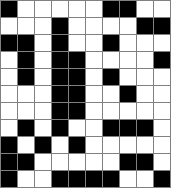

You can save a binary image as a GIF, but it is too small for convenient viewing. Though it's possible to expand the image in a browser window, the results aren't very nice. Also you can't easily open it in an image editor and add annotations.
To produce images for viewing on the website, I use the following routine.
/**
Expand a binary image to make it suitable for viewing.
You can't conveniently see a small binary image. To present it to a user
for viewing, make the pixels bigger and add a border.
@param[in] - image, the image (binarey or colour-index)
@param width - image width
@param height - image height
@param cellwidth - cell width of output image (not including border)
@param cellborder - value to use for cell border (0-255)
@param[out] wout - return for output image width
@param[out] hout - return for output image height
@returns Pointer to the exapnded image.
*/
unsigned char *expandbinary(unsigned char *image, int width, int height, int cellwidth, int cellborder, int *wout, int *hout)
{
unsigned char *answer;
int w, h;
int x, y;
int ix, iy;
unsigned char pix;
w = width * (cellwidth + 1) + 1;
h = height * (cellwidth + 1) + 1;
answer = malloc(w *h);
if (!answer)
goto out_of_memory;
for (y = 0; y < h; y++)
{
for (x = 0; x < w; x++)
{
if ((x % (cellwidth + 1)) == 0)
pix = cellborder;
else if ((y % (cellwidth + 1)) == 0)
pix = cellborder;
else
{
ix = (x - 1) / (cellwidth + 1);
iy = (y - 1) / (cellwidth + 1);
pix = image[iy *width + ix];
}
answer[y*w + x] = pix;
}
}
if(wout)
*wout = w;
if(hout)
*hout = h;
return answer;
out_of_memory:
return 0;
}
Here's the result.
